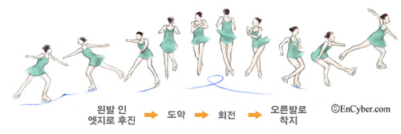
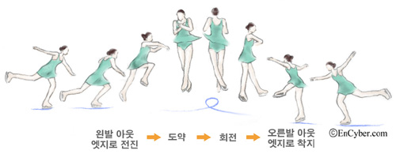

점프
점프는 크게 토(toe) 점프와 에지 점프로 구분한다.
① 토(toe) 점프
토 점프는 스케이트 앞쪽의 톱니로 빙판을 찍으면서 위로 솟구치는 기술
로서 토 루프 점프(Toe loop jump), 플립 점프(Flip jump),
러츠 점프(Lutz jump) 등으로 세분된다.
후진하며 오른발은 아웃사이드 에지 상태에서 왼
발의 토를 빙판에 찍어 점프하여 회전하고 오른발로 착지하
는 기술로서 주로 콤비네이션 점프의 연계 기술로 이용된다. 플립 점
프는 후진하며 왼발은 인사이드 에지 상태에서 오른발의 토를 사용하여
뒤로 점프한 뒤 오른발로 착지하는 기술로서 주로 콤비네이션 점프의
첫 점프로 이용된다. 러츠 점프는 후진하며 왼발은 아웃사이드 에지 상
태에서 오른발의 토를 사용하여 뒤로 점프하며 회전하고 착지하는
기술로서 콤비네이션 점프나 단독점프로 이용된다.
토 루프 점프
토 루프 점프
플립 점프
플립 점프
러츠 점프
러츠 점프
② 에지 점프
토의 톱니를 사용하지 않고 스케이트날의 인사이드
또는 아웃사이드 에지를 활용하여 한 발로 뛰어오르는 기술로서 살
코 점프(Salchow jump), 루프 점프(Loop jump), 악셀 점프(Axel jump) 등으로 세분된다.
살코 점프는 후진하며 왼발의 인사이드 에지로 점프하여
회전하고 오른발의 아웃사이드 에지로 착지하는 기술이다. 루프 점프는 후진
하며 오른발의 아웃사이드 에지로 점프하여 회전하고 오른발의 아웃사이드
에지로 착지하는 기술이다. 악셀 점프는 유일하게 전진하며 왼발의 아웃사이드 에
지로 점프하여 회전하고 오른발의 아웃사이드 에지로 착지하는데, 앞으로 도약하여
뒤로 착지하므로 다른 점프보다 0.5회전을 더하게 되어 가장 어려운 점프 기술로 간주된다.
살코 점프
살코 점프
루프 점프
루프 점프
악셀 점프
악셀 점프